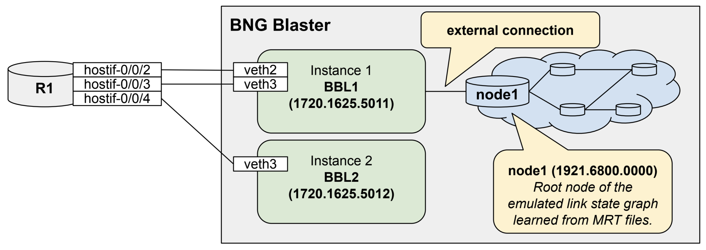

03. Routing
https://rtbrick.github.io/bngblaster/routing/index.html
03.01. ISIS
https://rtbrick.github.io/bngblaster/routing/isis.html
# > Linux
cd ~/bngblaster-training/03_routing/01_isis
# Generate ISIS Topology
lspgen -h
lspgen --level 2 --area 49.0001/24 --connector 1720.1625.5011 -m isis.mrt
# Start BNG Blaster
bngblaster -S run.sock -C config.json -l isis
In the other shell, use the following commands to interact with the active BNG Blaster instance.
# > Linux
cd ~/bngblaster-training/03_routing/01_isis
bngblaster-cli run.sock isis-adjacencies
# > RBFS (op)
show show isis neighbor
show isis database
show route
show route summary
# ping one of the nodes in the emualted ISIS network
ping 192.168.0.0 source-ip 172.16.255.1
Checking the Grafana dashboard, you should see an increase in the route count.
Now you can play with the size of the emulated ISIS topology by increasing node count (-c)
or amount of external routes (-e), where external routes are automatically equally distributed
over all nodes. Meaning 1000 nodes with 1000 external routes results into one external route per node.
# > Linux
lspgen --level 2 --area 49.0001/24 --connector 1720.1600.0011 -m isis.mrt -c 1000 -e 1000
Now you can start the BNG Blaster again and verify the ISIS database, routes, and the Grafana dashboard.
03.02. OSPF
https://rtbrick.github.io/bngblaster/routing/ospf.html
# > Linux
cd ~/bngblaster-training/03_routing/02_ospf
# Generate OSPF Topology
lspgen -h
lspgen -y --protocol ospf2 --connector 172.16.255.11:172.17.0.1 -m ospf2.mrt
lspgen -y --protocol ospf3 --connector 172.16.255.11:172.17.0.1 -m ospf3.mrt
# Start BNG Blaster
bngblaster -S run.sock -C config.json -l ospf
In the other shell, use the following commands to interact with the active BNG Blaster instance.
# > Linux
cd ~/bngblaster-training/03_routing/02_ospf
bngblaster-cli run.sock ospf-neighbors instance 1
bngblaster-cli run.sock ospf-neighbors instance 2
bngblaster-cli run.sock ospf-neighbors instance 3
bngblaster-cli run.sock ospf-neighbors instance 4
# > RBFS (op)
show ospf neighbor
show ospf database
show route
show route summary
# ping one of the nodes in the emualted OSPF network
ping 192.168.0.0 source-ip 172.16.255.1
03.03. LDP
https://rtbrick.github.io/bngblaster/routing/ldp.html
# > Linux
cd ~/bngblaster-training/03_routing/03_ldp
# Generate ISIS Topology and LDP label mappings
lspgen -y --level 2 --area 49.0001/24 --connector 1720.1625.5011 -e 10 -m isis.mrt
ldpupdate -l 172.16.255.11 -p 192.168.0.0/32 -P 10 -M 10 -f update.ldp
# Start BNG Blaster
bngblaster -S run.sock -C config.json -l ldp
In the other shell, use the following commands to interact with the active BNG Blaster instance.
# > Linux
cd ~/bngblaster-training/03_routing/03_ldp
bngblaster-cli run.sock ldp-sessions
bngblaster-cli run.sock ldp-database ldp-instance-id 1
bngblaster-cli run.sock ldp-database ldp-instance-id 2
# > Linux
cd ~/bngblaster-training/03_routing/03_ldp
bngblaster-cli run.sock stream-info flow-id 1
bngblaster-cli run.sock stream-info flow-id 2
The BNG Blaster monitors each traffic flow, tracking up to two receive labels
along with the received EXP and TTL values. Use jq to check if the received
labels match with those advertised via LDP:
# > Linux
cd ~/bngblaster-training/03_routing/03_ldp
bngblaster-cli run.sock stream-info flow-id 1 | jq .'["stream-info"]["rx-mpls1"]'
bngblaster-cli run.sock stream-info flow-id 2 | jq .'["stream-info"]["rx-mpls1"]'
03.04. BGP
https://rtbrick.github.io/bngblaster/routing/bgp.html
# > Linux
cd ~/bngblaster-training/03_routing/04_bgp
# Generate BGP updates with corresponding streams
bgpupdate -f update.bgp -a 65001 -l 100 -n 172.16.2.2 -N 1 -p 10.1.0.0/24 -P 100000 --end-of-rib -s streams.json --stream-interface veth4:10 --stream-pps 0.1
# Start BNG Blaster
bngblaster -S run.sock -C config.json -T streams.json -l bgp -I
Note
The configuration shows asymmetric thread allocation, with two TX threads for the traffic source interface and two RX threads for the traffic destination interface. All other interfaces and traffic directions are handled by the main thread.
In the other shell, use the following commands to interact with the active BNG Blaster instance.
# > Linux
cd ~/bngblaster-training/03_routing/04_bgp
bngblaster-cli run.sock bgp-sessions
# > RBFS (op)
show bgp peer
show route summary
03.05. BGP with ISIS
# > Linux
cd ~/bngblaster-training/03_routing/05_bgp_isis
# Generate ISIS Topology, BGP updates and streams
lspgen -y --level 2 --area 49.0001/24 --connector 1720.1625.5011 -e 10 -m isis.mrt
bgpupdate -f update.bgp -a 65001 -l 100 -n 192.168.0.0 -N 10 -p 10.1.0.0/24 -P 100000 -s streams.json
bgpupdate -f update.bgp -a 65001 -l 100 -n 192.168.0.0 -N 10 -m 20001 -M 1000 -p fc66:1::/48 -P 50000 --append -s streams.json --stream-append
bgpupdate -f update.bgp -a 65001 -l 100 -n 192.168.0.0 -N 10 -m 2 -p fc66:2::/48 -P 50000 --append --end-of-rib -s streams.json --stream-append
# Start BNG Blaster
bngblaster -S run.sock -C config.json -T streams.json -l bgp
03.06. BGP Convergence
https://github.com/rtbrick/BGP-CP-DP-Testing
# > Linux
cd ~/bngblaster-training/03_routing/06_bgp_convergence